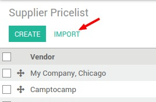
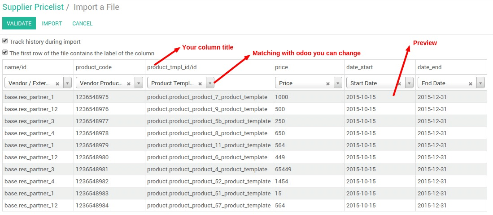

介绍
Big companies use to import supplier pricelists day to day. Indeed, prices are always changing and you need to get price up to date to deal with a high number of products.
To manage supplier prices on product form, read this document (如何产品上设置不同的供应商). Here we will show you how to import customer prices.
所需配置
在采购设置中，你有2种选择：
在产品页面上管理供应商价格
允许使用并导入供应商价格表
在此我们选择：允许使用并导入供应商价格表

导入供应商价格表
There are 2 scenarios: import the vendor pricelist for the first time, or update an existing vendor pricelist. In both scenarios, we assume your product list and vendor list is updated and you want to import the price list of vendors for a given product.
To import a list from a document, the best pratice is to export first to get an example of data formating and a proper header to reimport.


第一次导入列表
准备文档
In , export a template of document to get import/export compatible and get the right format to import in mass. Create manually a data and export it ()
这里是你可以导入的字段的列表：
导入文档的头(csv, xls) | [UNKNOWN NODE problematic]意义和如何得到 ** | 示例 |
|---|---|---|
| name_id | 供应商ID->导出获取供应商列表 | __export__.res_partner_12 |
| product_code | 供应商产品编码 -> 自由文本 | 569874 |
| price | 供应商价格 -> 随意文本 | 1500 |
| product_tmpl_id.id | 产品模板ID ->导出并获取产品列表 | __export__.product_template_13 |
| currency_id.id | 币别 ->获取并导出币别列表 | |
| date_end | 价格有效期的最后一天 | 2015-10-22 |
| min_qty | 从该供应商采购最小数量 | 2 |
| product_id.id | 产品变量名称－>导出并获取变量 | __export__.product_13 |
| date_start | 价格可用的开始日期 | 2015-12-31 |
你能得到一个能导入的文档，可以在其中填入供应商价格

导入该文档到YuanCloud，点击列表视图中的**导入**并上传你的文档。你可以确认并查看错误。一旦系统告知你一切正常，你就可以导入列表。
在导入之后，在**库存**页签的**供应商**的位置已经被填好。
更新供应商价格表
当你的供应商的价格表变更，有必要更新当前的价格。
Follow the procedure of the first scenario in order to export existing data from . Select everything, and export from the Action menu.
Change price, end date, add a line, change a supplier, ... and then reimport in YuanCloud. Thanks to the ID, the list will be updated. Either the id is recognized and the line is updated or the ID is not known by YuanCloud and it will create a new pricelist line.
After the import, the Vendors section in Inventory tab of the product form is updated.